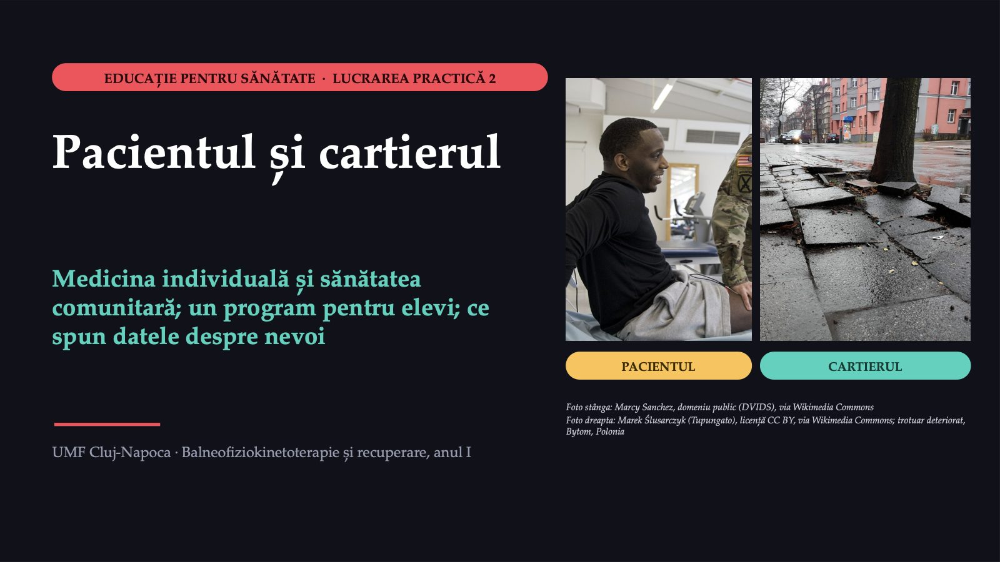
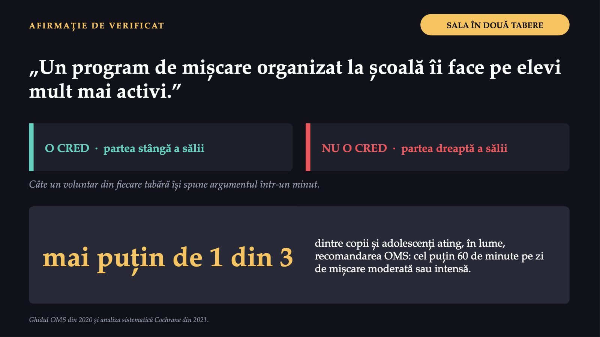

Pacientul și cartierul

1 / 18Aceeași săptămână, două întrebări
![MENTIMETER · VOT CE FACEM CU RĂSPUNSURILE VOASTRE Întâi citim toate răspunsurile de la biletul de ieșire al primei lucrări practice.Apoi alegem două modificări și le aplicăm de la lucrarea următoare. Aceeași săptămână, două întrebări AMBULATORIUL DE RECUPERARE Doamna Elena genunchi Pacient nou cădere Pacient nou genunchi Pacient nou cădere Pentru doamna Elena, kinetoterapeutul lucrează cu problemele ei. Vineri observă: majoritatea pacienților noi sunt vârstnici din același cartier și aproape niciunul nu face mișcare între ședințe. LABORATORUL DE IMAGISTICĂ Mama: „Este periculoasă examinarea?” Asistenta explică ce va simți copilul. La ședința lunară, șeful laboratorului arată că examenele prin tomografie computerizată (CT) ale capului la copiii cu lovituri ușoare au crescut față de anul trecut. În fiecare caz sunt două întrebări. Care aparține sănătății comunitare? Mentimeter: intrați pe menti.com cu codul afișat pe ecran.](diapozitive/LP02/002.jpg) 2 / 18
2 / 18Care întrebare e a comunității?
![RĂSPUNS · VOTUL DE DESCHIDERE Care întrebare e a comunității? AMBULATORIUL DE RECUPERARE Ce exerciții sunt potrivite pentru genunchiul doamnei Elena? INDIVIDUALĂ De ce au atât de mulți vârstnici din cartier dureri de genunchi sau căderi și ce se poate face pentru toți? COMUNITARĂ LABORATORUL DE IMAGISTICĂ Ce va simți băiatul în timpul examenului CT? INDIVIDUALĂ De ce a crescut numărul examenelor CT ale capului la copiii cu lovituri ușoare și ce schimbăm pentru toți copiii? COMUNITARĂ Ambele întrebări sunt legitime și ambele țin de profesia voastră. Prima privește o persoană, a doua un grup întreg.](diapozitive/LP02/003.jpg) 3 / 18
3 / 18Comunitatea și medicina comunitară
![PRIMII DOI TERMENI NOI Comunitatea și medicina comunitară TERMENUL 1 · COMUNITATEA Un grup de oameni cu ceva important în comun și cu nevoi asemănătoare. Un cartier, o școală, angajații unei fabrici, pacienții unui centru de recuperare, părinții copiilor care ajung la radiologie. TERMENUL 2 · MEDICINA COMUNITARĂ Grija pentru sănătatea unui grup întreg, nu a unui singur pacient. pacientul comunitatea diagnosticul date despre grup tratamentul un program Glosarul Organizației Mondiale a Sănătății, 1998 (comunitatea).](diapozitive/LP02/004.jpg) 4 / 18
4 / 18Un pacient, o comunitate
![ȘASE DEOSEBIRI Un pacient, o comunitate MEDICINA INDIVIDUALĂ SĂNĂTATEA COMUNITARĂ Pe cine îngrijiți persoana din fața voastră un grup întreg, inclusiv cei care nu vin la cabinet Cine face primul pas pacientul vine când are o problemă profesioniștii merg spre oameni, înainte de boală Diagnosticul examen și teste date despre grup Ce faceți tratament și recuperare programe de prevenție și educație Cum știți că a mers persoana și-a recâștigat funcția se schimbă cifrele grupului Dacă alegeți doar una cazurile noi continuă să vină persoana cu o problemă rămâne fără îngrijire](diapozitive/LP02/005.jpg) 5 / 18
5 / 18Un risc mic, la mulți oameni
![DUPĂ GEOFFREY ROSE Un risc mic, la mulți oameni ÎNTREBAREA 1 · STRATEGIA RISCULUI ÎNALT Ce determină cazurile individuale? Căutați persoanele vulnerabile și le protejați. ÎNTREBAREA 2 · STRATEGIA POPULAȚIONALĂ Ce determină frecvența bolii în populație? Controlați cauzele care fac boala frecventă. De obicei nu sunt în competiție; prima grijă rămâne controlul cauzelor. VALORI IPOTETICE Căderile dintr-un cartier, într-un an 1 000 de vârstnici cu risc mare (20%) 200 de căderi 9 000 de vârstnici cu risc mic (5%) 450 de căderi Cu alte valori, rezultatul se poate inversa. miercuri vineri](diapozitive/LP02/006.jpg) 6 / 18
6 / 18Patru pași, o echipă, un telefon
![MICROSOFT FORMS · PARTEA I ECHIPE DE PATRU SAU CINCI COLEGI Patru pași, o echipă, un telefon 1 Care întrebare aparține sănătății comunitare, în fiecare caz? 2 Cine este „pacientul” comunității și din ce se pune „diagnosticul”? 3 Calculați: căderile din cartier și cazurile după examenele CT ale unui an. 4 Alegeți decizia care reflectă raționamentul lui Rose. REAMINTIRE DIN CURSUL AL DOILEA Examenele CT ale capului la copii sub 10 ani: un caz suplimentar de leucemie și unul de tumoră cerebrală la 10 000 de examinări (estimare pentru examenele CT din 1985–2002). Fiecare pas se deschide numai după răspunsul corect la cel dinainte. miercuri vineri](diapozitive/LP02/007.jpg) 7 / 18
7 / 18Unde s-a greșit?
![RĂSPUNS · PARTEA I Unde s-a greșit? [distribuția răspunsurilor, proiectată din Forms] 1 Întrebarea comunitară privește grupul; celelalte, o singură persoană. 2 Pacientul este comunitatea; diagnosticul vine din date despre grup. 3 450 ÷ 650 × 100 = 69,2%. Examenele CT: 50 000 ÷ 10 000 × 2 = 10 cazuri în zece ani. 4 Cele două se completează: 130 de căderi evitate prin programul pentru cartier, 100 prin cel individual. Când vedeți același tip de pacient de mai multe ori, puneți-vă și întrebarea comunității.](diapozitive/LP02/008.jpg) 8 / 18
8 / 18O oră despre postură
![CAZUL · CEREREA ȘCOLII O oră despre postură De la: directoarea unei școli gimnaziale din cartier Către: centrul de recuperare Profesorii de educație fizică au observat că mulți elevi de clasa a șaptea obosesc repede, stau aplecați peste telefon în pauze și se plâng de spate. Vă rog „o oră despre postură, ținută de un kinetoterapeut, pentru toate clasele a șaptea”. Ce vrem să se schimbe în viața lor și cum vom ști dacă s-a schimbat? O oră ținută o singură dată este informare, nu încă educație pentru sănătate.](diapozitive/LP02/009.jpg) 9 / 18
9 / 18mai puțin de 1 din 3

10 / 180,73
 11 / 18
11 / 18Șapte rubrici, o pagină
![FIȘA PROGRAMULUI Șapte rubrici, o pagină PROGRAM DE EDUCAȚIE PENTRU SĂNĂTATE 1 Problema, cu o cifră 2 Grupul 3 Obiectivul măsurabil 4 Activitățile 5 Partenerii 6 Resursele 7 Evaluarea VALORI IPOTETICE NU SE POATE EVALUA „Elevii vor înțelege importanța unei posturi corecte.” SE POATE NUMĂRA „Până la sfârșitul semestrului, cel puțin 60 dintre cei 120 de elevi de clasa a șaptea fac zilnic, la școală, o pauză activă de zece minute, numărată de diriginte într-o săptămână din octombrie și într-una din februarie.”](diapozitive/LP02/012.jpg) 12 / 18
12 / 18Fișa programului pentru elevi
 13 / 18
13 / 18Ce spun datele și cum se citesc?
![ÎNTREBĂRI PENTRU TOATĂ SALA CAZUL · TATĂL CARE A CITIT PE INTERNET Ce spun datele și cum se citesc? PRIMA SITUAȚIE Un tată a găsit pe internet un program de exerciții „care corectează postura în două săptămâni” și vrea să știe dacă îl poate face acasă cu fiul lui. A DOUA SITUAȚIE Echipa programului pentru școală propune afișele și filmele scurte numai pe internet, pentru că „oricum toată lumea caută acolo”. ÎNTREBAREA PREGĂTITĂ DE VOI Cea pe care v-ar putea-o pune un pacient sau un părinte. Unde ar căuta acel om răspunsul și cum ar ști dacă îl poate crede? Răspunsurile se notează pe tablă.](diapozitive/LP02/014.jpg) 14 / 18
14 / 18Cine caută informații despre sănătate pe internet?
![O ANCHETĂ EUROPEANĂ Cine caută informații despre sănătate pe internet? Evaluarea nevoilor, din prima lucrare: ce problemă are comunitatea, cât de mare este și de ce apare. România 31,2 2019 28,1 2020 40,0 2021 28,9 2022 46,1 2023 31,5 2024 42,7 2025 60,3 UE 2025 Persoane de 16–74 de ani care au căutat informații despre sănătate pe internet în ultimele trei luni (%). Eurostat, ancheta despre folosirea tehnologiei informației (isoc_ci_ac_i), valorile publicate. CINE a fost întrebat? persoanele de 16–74 de ani CE PERIOADĂ? ultimele trei luni ÎN CE AN? o cifră dintr-un singur an poate înșela: priviți mai mulți ani](diapozitive/LP02/015.jpg) 15 / 18
15 / 18Trei sarcini, aceleași echipe
![FORMS · PARTEA A III-A ȘTIȚI CE SPUN DATELE? Trei sarcini, aceleași echipe 1 Calculați diferența dintre Uniunea Europeană și România, în 2025, în puncte procentuale, cu o zecimală. 2 Ancheta clasei a șaptea: din 28 de elevi, 6 au făcut mișcare cel puțin 60 de minute în fiecare dintre ultimele șapte zile. Ce proporție? 3 Alegeți întrebarea de chestionar formulată corect pentru program. Ancheta clasei: valori ipotetice. Eurostat 2025: România 42,7%, Uniunea Europeană 60,3%. TERMENUL 3 Punct procentual Unitatea în care se măsoară diferența dintre două procente. Formularul rămâne deschis.](diapozitive/LP02/016.jpg) 16 / 18
16 / 18Cum se calculează și cum se întreabă
![RĂSPUNS · PARTEA A III-A Cum se calculează și cum se întreabă PUNCTE PROCENTUALE 60,3 − 42,7: diferența dintre două procente se spune în puncte procentuale, nu în procente. Rezultatul apare în formular. ANCHETA CLASEI 6 ÷ 28 × 100 = 21,4%: criteriu mai strict decât media de 60 de minute pe zi. ÎNTREBAREA BUNĂ „În ultimele șapte zile, în câte zile ați făcut mișcare cel puțin 60 de minute în total?” Un singur lucru, o perioadă clară, niciun răspuns sugerat. INFORMAȚIA DE PE INTERNET · PATRU ÎNTREBĂRI Cine o publică? Când a fost actualizată? Pe ce se sprijină? O confirmă o a doua sursă independentă?](diapozitive/LP02/017.jpg) 17 / 18
17 / 18Ce a fost util azi?
 18 / 18
18 / 18Săgeți sau spațiu: navigare · O: vedere de ansamblu · N: notele prezentatorului · F: ecran complet · Esc: închidere